A Gestão de Retalho é composta por dois programas que trabalham sobre a mesma base de dados:
Programa
Para quê
Quem usa
Administração (ícone "Gestão de Retalho")
Produtos, preços, stock, clientes, cotações, faturas, relatórios e configurações. Protegida por utilizador e palavra-passe.
Dono ou gerente
Ponto de Venda (PDV)
Vender ao balcão: escolher produtos, receber o pagamento, dar o troco e imprimir o recibo. Pensado para ecrãs de toque.
Operadores de caixa
O PDV abre-se sempre a partir da Administração, com o botão laranja PDV no topo do menu. Tudo o que se vende no PDV aparece de imediato na Administração.
Os valores apresentados neste manual (produtos, clientes e vendas) são de uma loja de demonstração. Os preços incluem IVA.
2. Instalação e primeiro arranque
Instalar
Antes de instalar, ligue a impressora de recibos e instale o controlador do fabricante. Defina-a como impressora predefinida do Windows, com o papel do rolo (80 mm ou 58 mm).
Execute GestaoRetalho-1.0.0-Instalador.exe. Se o Windows mostrar "O Windows protegeu o computador", carregue em Mais informações → Executar mesmo assim.
Siga os passos do instalador. No fim fica um atalho Gestão de Retalho no ambiente de trabalho e no menu Iniciar.
O instalador instala também o componente WebView2 do Windows, se faltar (precisa de Internet nesse momento). Depois disso, o programa funciona sem Internet.
Primeiro arranque
Na primeira vez que abre a Administração aparece o assistente de configuração. Preencha:
Tipo de negócio — Ferragem, Bar, Farmácia, Mercearia ou Personalizado. Define as cores, os módulos ativos e algumas categorias e produtos de exemplo. Não se muda depois.
Nome da loja e, opcionalmente, o logótipo.
Administrador — o seu nome, utilizador e palavra-passe. Guarde bem a palavra-passe: é a única forma de entrar na Administração.
Depois disso, a loja fica criada com um armazém "Principal" e pode começar a registar produtos e stock.
Os dados ficam no próprio computador, na pasta %AppData%\gestao-retalho-admin. Faça cópias de segurança desta pasta com regularidade (por exemplo para uma pen USB). Desinstalar o programa não apaga os dados.
3. Entrar na Administração
Abra o atalho Gestão de Retalho, escreva o utilizador e a palavra-passe do administrador e carregue em Entrar.
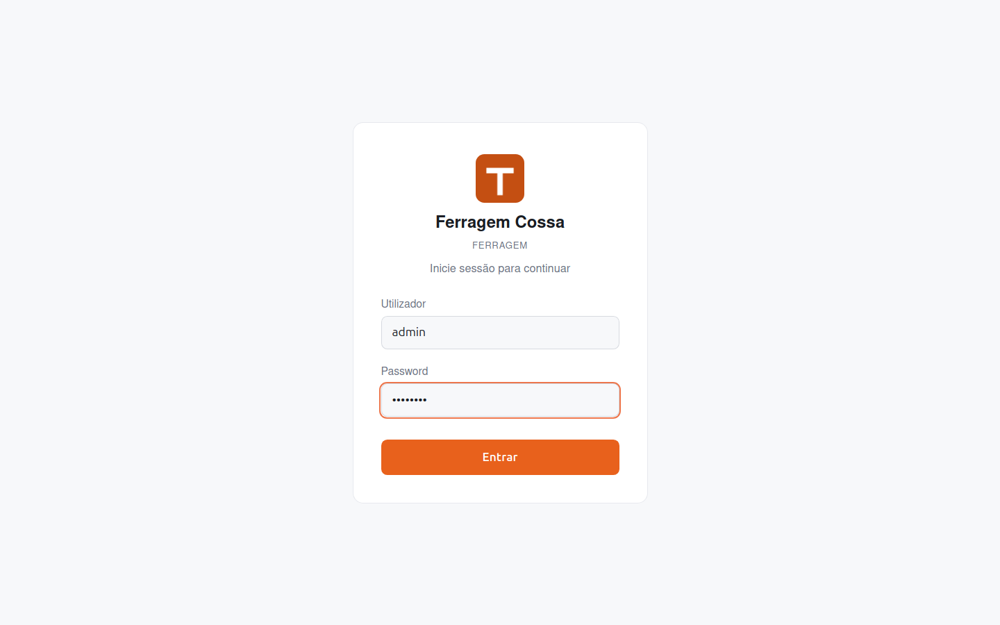
Ecrã de entrada, com o logótipo e o nome da loja.
O menu
À esquerda está o menu, organizado por grupos:
Grupo
Ecrãs
(topo)
PDV (abre o ponto de venda), Dashboard
Vendas
Vendas, Cotações, Faturas, Clientes e dívidas
Stock
Stock, Inventário, Armazéns (e Farmácia, nas farmácias)
Catálogo
Produtos, Categorias, Fichas técnicas
Gestão
Relatórios, Utilizadores
A engrenagem ao lado do nome da loja abre as Configurações da loja. Sair, no fundo do menu, termina a sessão.
4. Configurações da loja
Carregue na engrenagem junto ao nome da loja, no canto superior esquerdo.
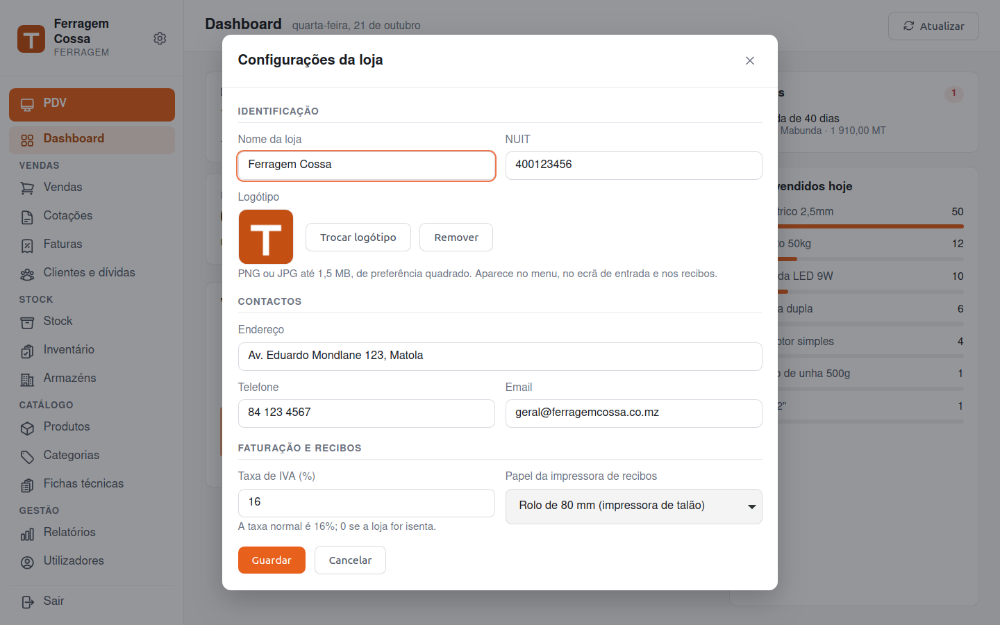
Configurações da loja.
Nome da loja e NUIT (9 algarismos) — aparecem no menu, nos recibos, cotações e faturas.
Logótipo — PNG ou JPG até 1,5 MB, de preferência quadrado. Sem logótipo, aparece um quadrado com a cor da loja.
Endereço, telefone e email — aparecem no cabeçalho dos documentos.
Taxa de IVA (%) — 16 por omissão; escreva 0 se a loja for isenta. Os preços dos produtos incluem IVA; esta taxa é usada para mostrar a parte do total que é imposto.
Papel da impressora de recibos — rolo de 80 mm, rolo de 58 mm ou folha A5.
Carregue em Guardar. O PDV lê estes dados quando abre: se estiver aberto, feche-o e volte a abri-lo.
5. Dashboard
É o primeiro ecrã depois de entrar. Mostra o resumo do dia:
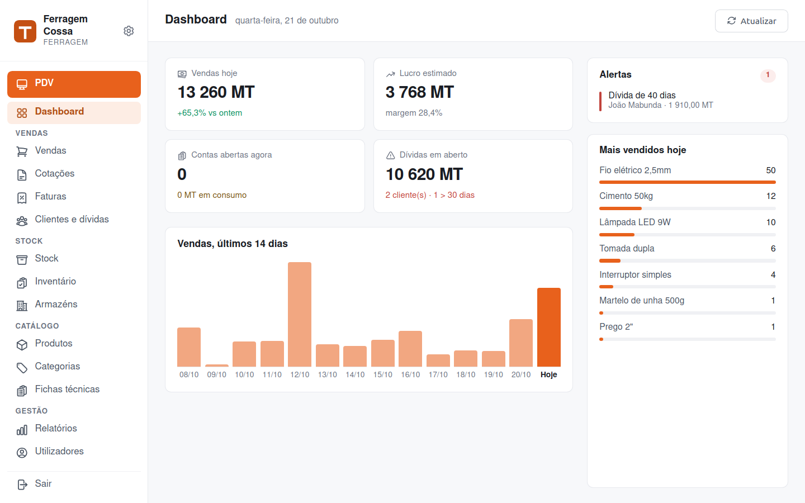
Dashboard.
Vendas hoje e a variação face a ontem; Lucro estimado e margem.
Contas abertas (bares) e Dívidas em aberto de clientes.
Vendas, últimos 14 dias — uma barra por dia; passe o rato por cima para ver o valor.
Alertas — produtos abaixo do stock mínimo, dívidas com mais de 30 dias, lotes a vencer (farmácias).
Mais vendidos hoje.
O botão Atualizar volta a ler os dados (útil enquanto o PDV está a vender).
6. Produtos
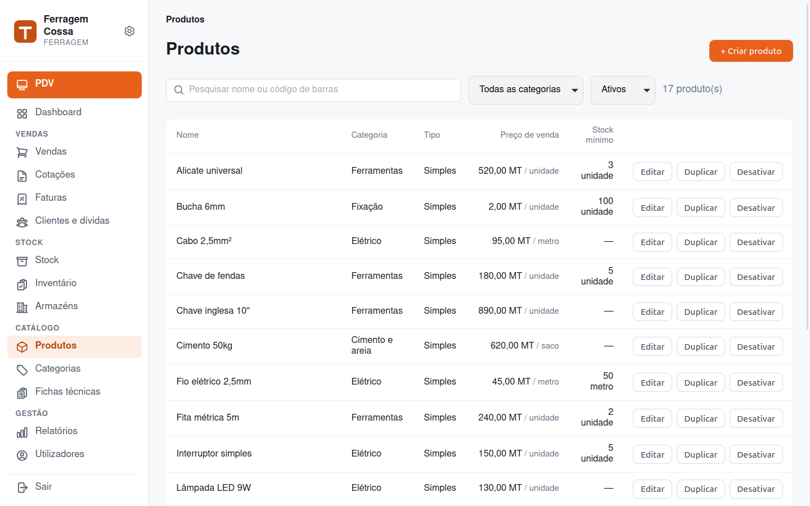
Lista de produtos.
A lista mostra cada produto com a categoria, o tipo, o preço de venda e o stock mínimo. No topo pode:
Pesquisar pelo nome ou pelo código de barras;
Filtrar por categoria e por estado (ativos, inativos, todos).
Em cada linha: Editar, Duplicar (cria uma cópia, útil para variantes) e Desativar (o produto deixa de aparecer no PDV, mas o histórico mantém-se).
Criar ou editar um produto
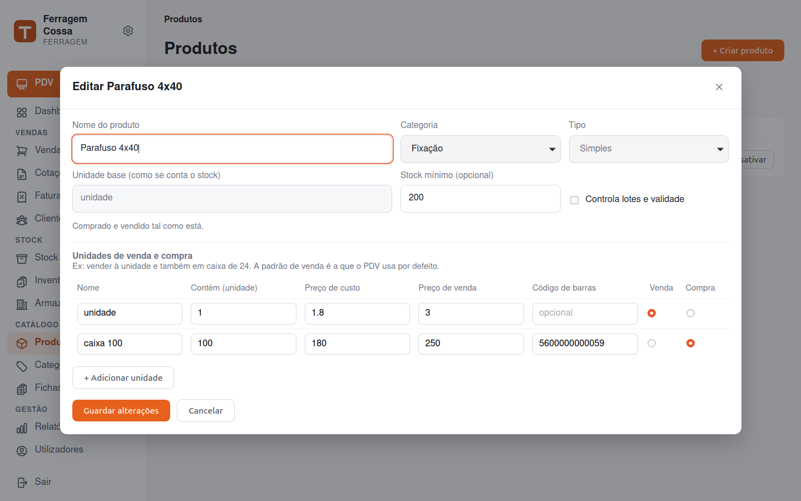
Edição de um produto com duas unidades: à unidade e em caixa de 100.
Nome, Categoria e Tipo: Simples (comprado e vendido tal como está — a maioria dos produtos de uma ferragem), Composto ou Semi Produzido (ver Fichas técnicas).
Unidade base — como se conta o stock (unidade, kg, metro, saco…). Não se muda depois de criar.
Stock mínimo — abaixo deste valor o produto aparece nos alertas.
Controla lotes e validade — para farmácias.
Unidades de venda e compra. Cada produto tem pelo menos uma unidade, e pode ter várias. Exemplo: o parafuso conta-se à unidade, vende-se à unidade a 3,00 MT e compra-se em caixa de 100 a 180,00 MT. Para cada unidade indique:
Contém — quantas unidades base tem (a caixa contém 100);
Preço de custo e Preço de venda (com IVA);
Código de barras (opcional) — o leitor do PDV encontra o produto por ele;
Venda / Compra — qual é a unidade usada por omissão no PDV e nas receções.
Pode escrever os preços com vírgula (185,50). Um código de barras só pode estar num produto.
7. Categorias e Fichas técnicas
Categorias
As categorias agrupam os produtos e aparecem como separadores no PDV (Cimento e areia, Elétrico, Ferramentas…).
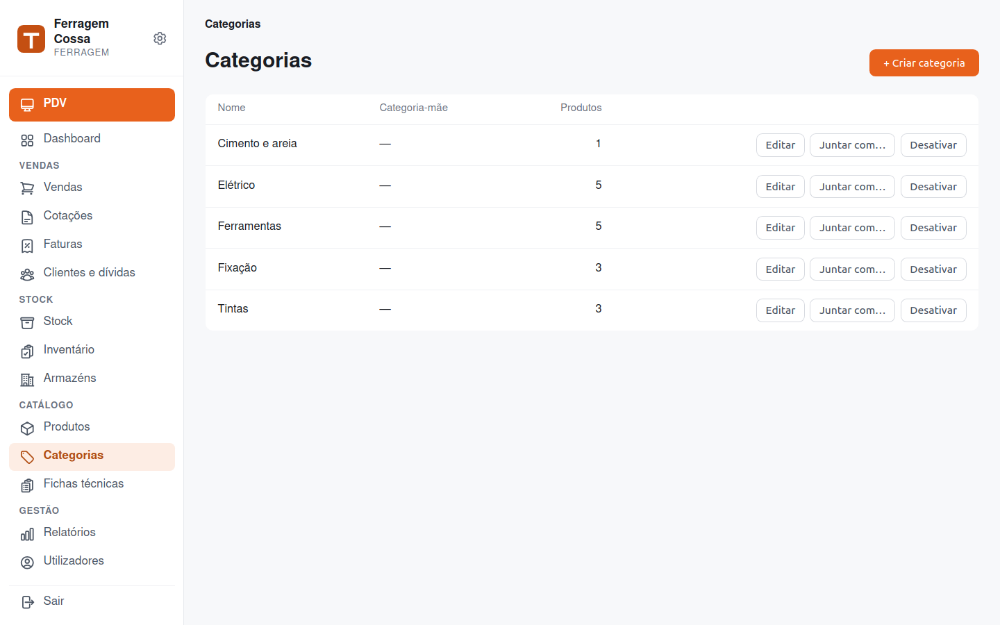
Categorias, com o número de produtos de cada uma.
+ Criar categoria — nome e, opcionalmente, a categoria-mãe.
Não pode haver duas categorias com o mesmo nome. Se tiver ficado alguma repetida, aparece marcada como repetida; use Juntar com… para passar os produtos para a outra.
Desativar esconde a categoria do PDV.
Fichas técnicas
Usadas sobretudo em bares e restaurantes. Um produto Composto (por exemplo um cocktail) é feito na hora a partir de outros produtos; a ficha técnica diz quanto de cada ingrediente leva, e o stock dos ingredientes desce quando se vende. Um produto Semi Produzido é preparado antes e guardado em stock. Numa ferragem raramente são necessárias.
8. Armazéns
Uma loja pode ter vários armazéns: o principal, outros pontos de venda e depósitos.
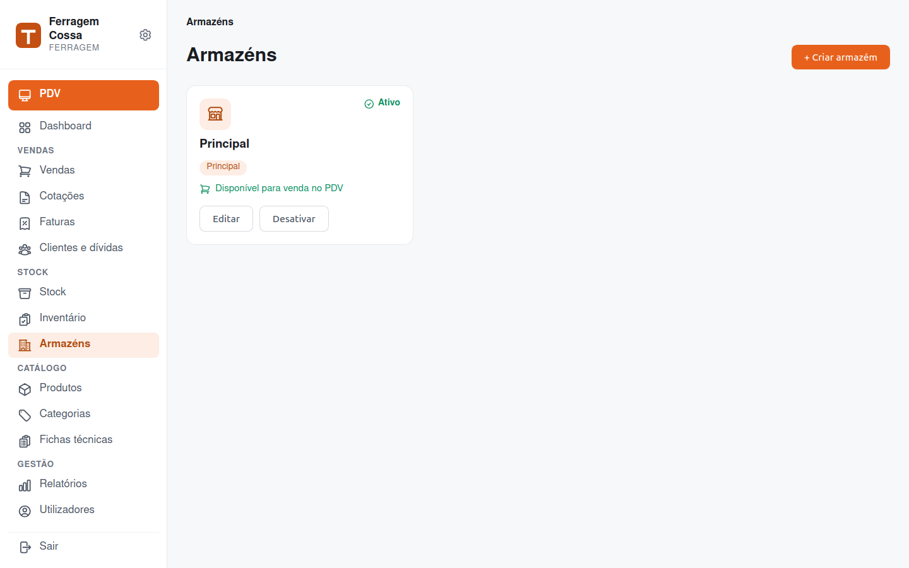
Armazéns.
Ao criar ou editar um armazém escolhe o tipo (Principal, Ponto de venda, Depósito) e se está disponível para venda:
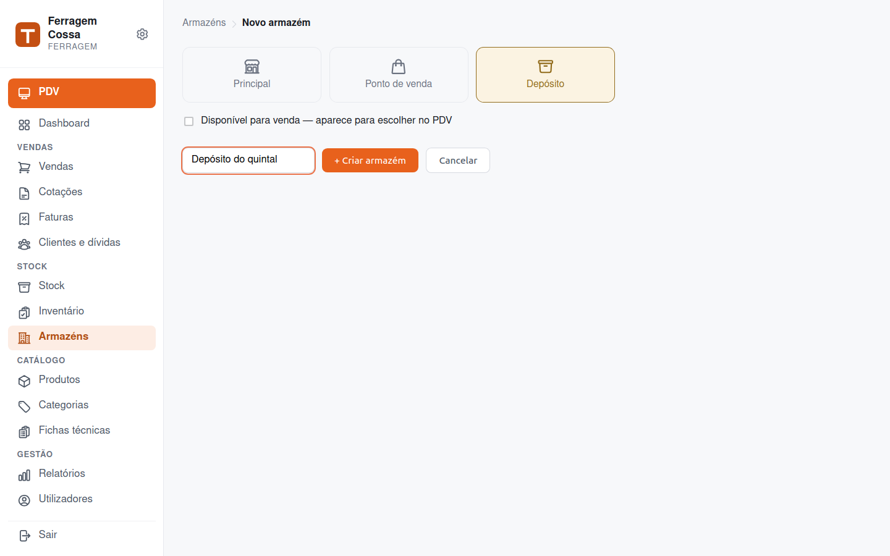
Novo armazém do tipo Depósito: fica fora de venda.
Só os armazéns disponíveis para venda aparecem para escolher no PDV.
Um depósito fica fora de venda por omissão: guarda stock, mas não se vende a partir dele. Para levar mercadoria do depósito para a loja, faça uma transferência (ver Stock).
Tem de existir sempre pelo menos um armazém ativo disponível para venda.
9. Stock e receção de mercadoria
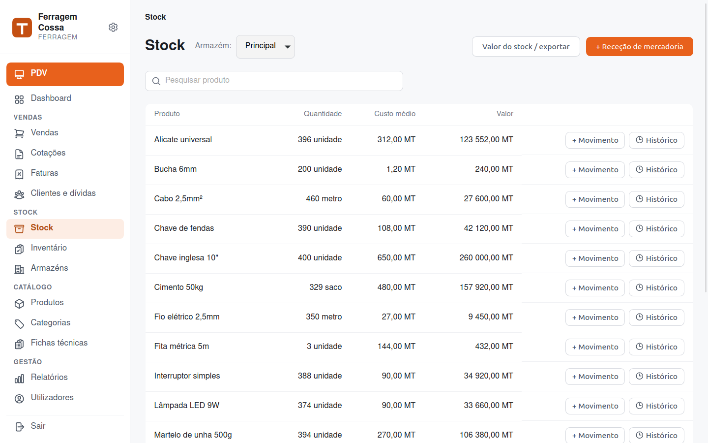
Stock do armazém Principal.
Escolha o armazém no topo. A tabela mostra, para cada produto, a quantidade, o custo médio e o valor em stock (e o total do armazém no fim). Produtos abaixo do mínimo aparecem assinalados.
Receção de mercadoria (entrada de compras)
Quando chega mercadoria de um fornecedor, use + Receção de mercadoria e registe a guia ou fatura inteira de uma vez:
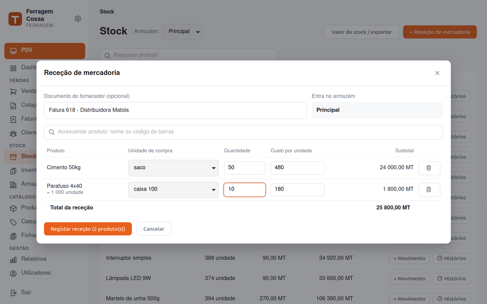
Receção de 50 sacos de cimento e 10 caixas de parafusos.
Escreva a referência do documento do fornecedor (opcional).
Pesquise cada produto pelo nome ou leia o código de barras e carregue em Enter.
Confirme a unidade de compra (saco, caixa…), a quantidade e o custo por unidade. Por baixo do nome aparece a conversão ("= 1 000 unidade").
Carregue em Registar receção.
O stock aumenta e o custo médio é recalculado. Ou entram todas as linhas, ou nenhuma.
Outros movimentos
O botão + Movimento de cada produto regista um movimento isolado:
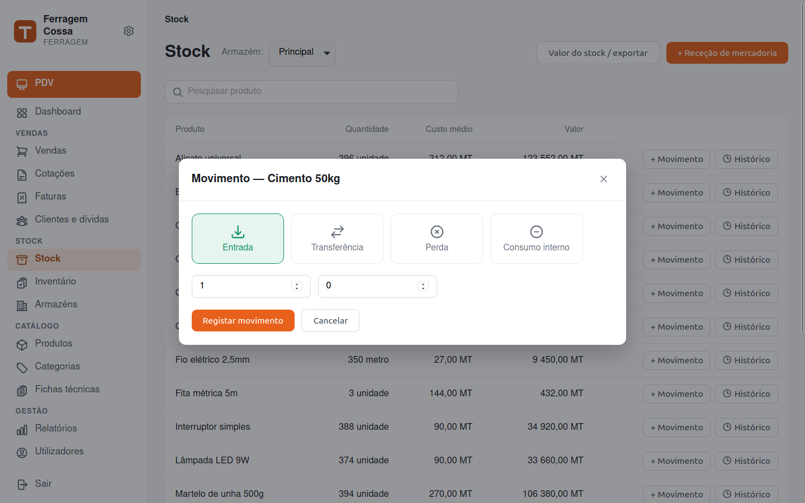
Tipos de movimento.
Tipo
Quando usar
Entrada
Entrada avulsa de um só produto.
Transferência
Passar stock de um armazém para outro (por exemplo do depósito para a loja).
Perda
Produto partido, estragado ou roubado. Pede o motivo.
Consumo interno
Produto usado pela própria loja.
O botão Histórico mostra todos os movimentos do produto (entradas, vendas, ajustes de inventário…):
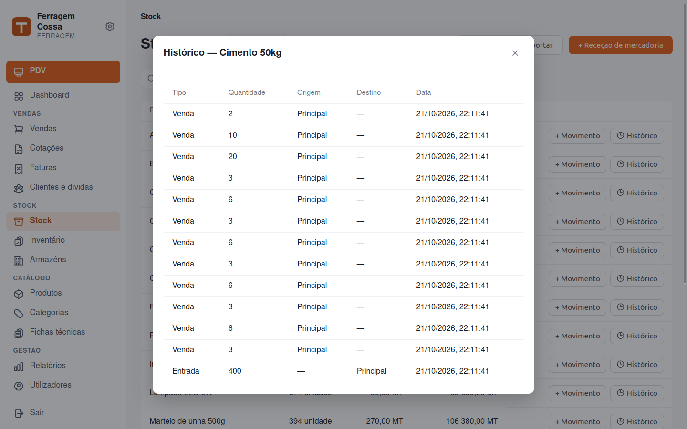
Histórico de movimentos do cimento.
Valor do stock / exportar abre o relatório de stock, que se pode exportar para Excel ou PDF.
10. Inventário
O inventário serve para contar o que existe fisicamente e corrigir o stock do sistema.
Escolha o armazém e carregue em + Iniciar inventário.
Para cada produto, escreva a quantidade contada. A coluna Diferença mostra logo a falta (vermelho) ou a sobra.
Pode contar aos poucos: as contagens ficam gravadas e pode sair e voltar.
No fim, carregue em Fechar inventário. O sistema faz os ajustes de stock das diferenças.
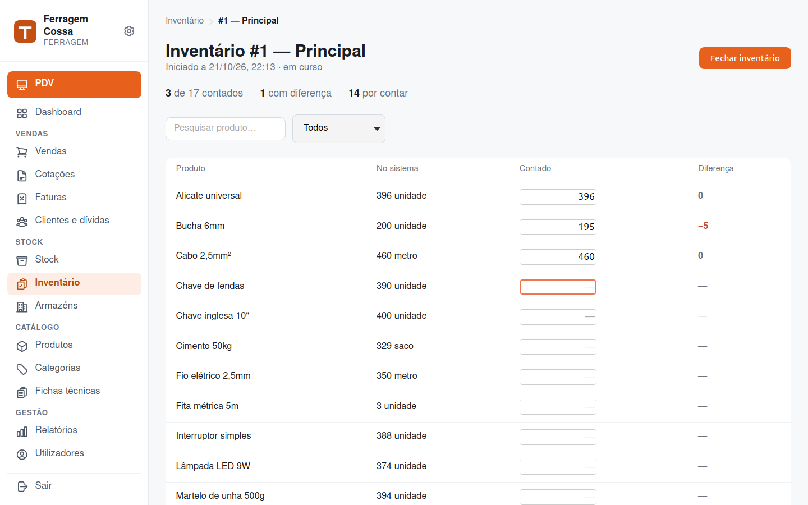
Inventário em curso: faltam 5 buchas.
Só pode haver um inventário aberto por armazém. Evite vender do armazém enquanto conta, ou conte fora do horário de abertura.
11. Vendas e anulação
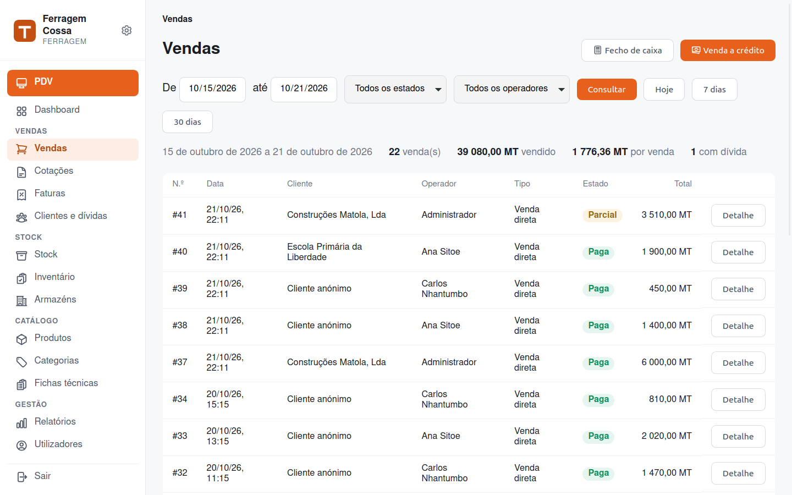
Vendas dos últimos 7 dias.
Lista todas as vendas (do PDV e da Administração). Escolha o período (ou use Hoje, 7 dias, 30 dias) e filtre por estado e por operador. No topo aparecem o número de vendas, o total vendido e o valor médio.
Estado
Significado
Paga
Paga por inteiro.
Dívida / Parcial
Venda a crédito: nada pago ou parte paga.
Cancelada
Anulada.
Detalhe da venda
Detalhe mostra os produtos, os totais, o custo e a margem, e os pagamentos. Daqui pode imprimir o recibo em PDF.
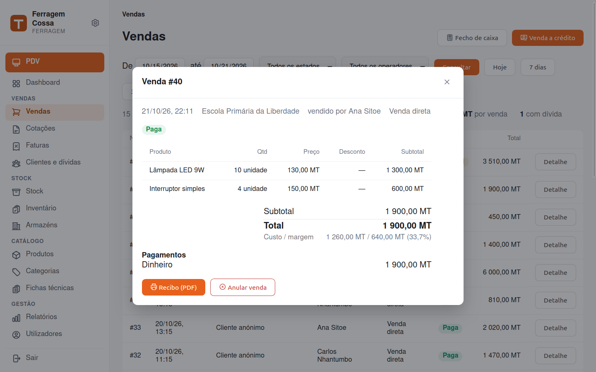
Detalhe de uma venda.
Anular uma venda
Se uma venda foi registada por engano ou o cliente desistiu, carregue em Anular venda, escreva o motivo e confirme.
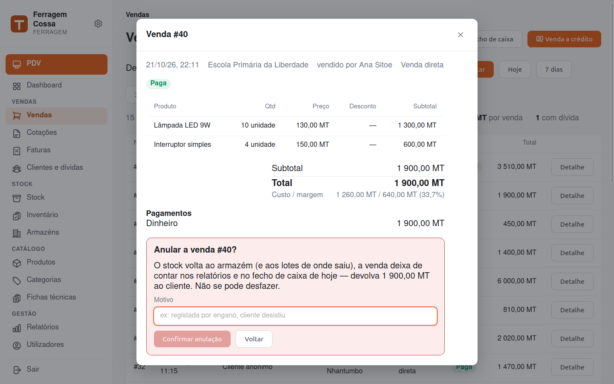
Confirmação da anulação.
O stock volta ao armazém e a venda deixa de contar nos relatórios e no fecho de caixa.
Só se anula no próprio dia da venda.
Uma venda a crédito só se anula se ainda não tiver pagamentos.
Com a faturação ligada, a anulação emite uma Nota de Crédito (ver Faturas).
12. Venda a crédito
O cliente leva os produtos agora e paga depois. Só existe na Administração (o PDV exige o pagamento completo). Abre-se em Vendas → Venda a crédito ou na ficha do cliente (Vender a crédito).
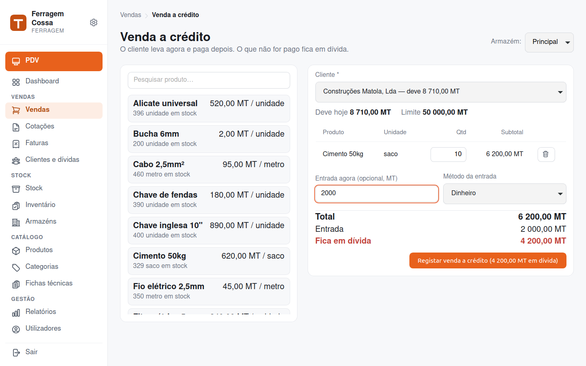
Venda a crédito de 10 sacos de cimento, com 2 000 MT de entrada.
Escolha o cliente (tem de estar registado). Aparece quanto já deve e o limite de crédito.
Toque nos produtos à esquerda e ajuste as quantidades.
Se o cliente pagar parte agora, escreva a entrada e o método.
Carregue em Registar venda a crédito. O que falta fica em dívida.
Se o cliente passar o limite de crédito aparece um aviso, mas a venda não é bloqueada.
13. Clientes e dívidas
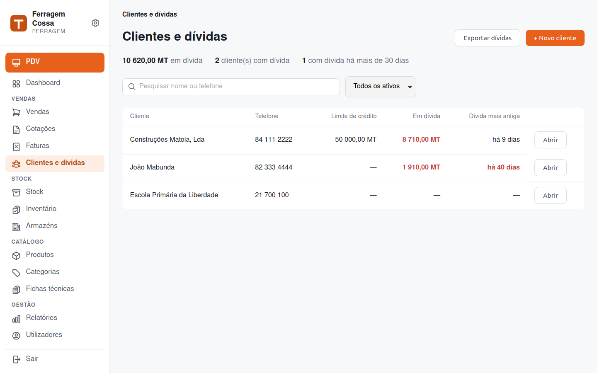
Clientes, com o valor em dívida e a dívida mais antiga.
No topo: total em dívida, clientes com dívida e dívidas com mais de 30 dias. Pesquise por nome ou telefone. + Novo cliente regista nome, telefone, NUIT, email, morada e limite de crédito. Exportar dívidas abre o relatório de dívidas em aberto (Excel/PDF).
Ficha do cliente
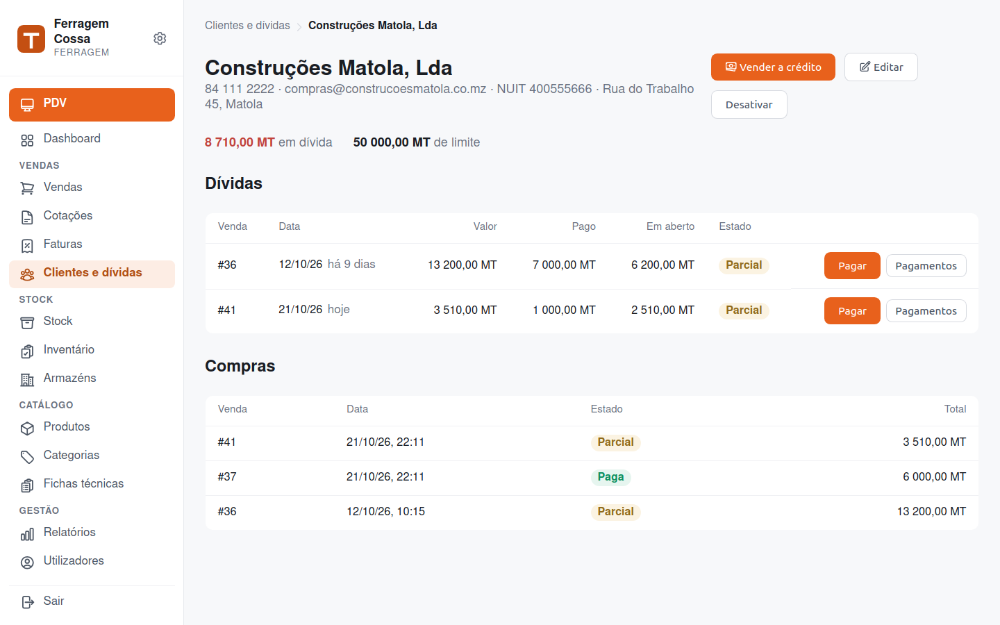
Ficha do cliente: dívidas e compras.
Mostra as dívidas (com o que falta pagar) e todas as compras. Para registar um pagamento carregue em Pagar:
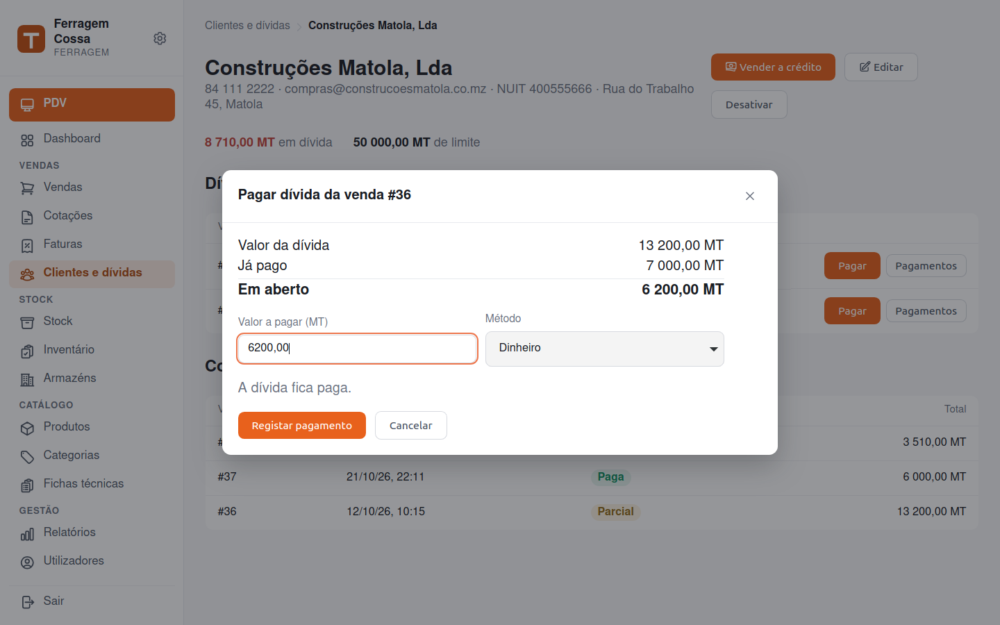
Pagamento de uma dívida.
Escreva o valor (pode ser só uma parte) e o método. Pagamentos mostra os pagamentos já feitos de cada dívida. Os pagamentos de dívidas entram no fecho de caixa do dia em que são recebidos.
14. Cotações
Uma cotação (orçamento/proforma) dá ao cliente o preço por escrito. Não mexe no stock nem conta como venda até ser convertida.
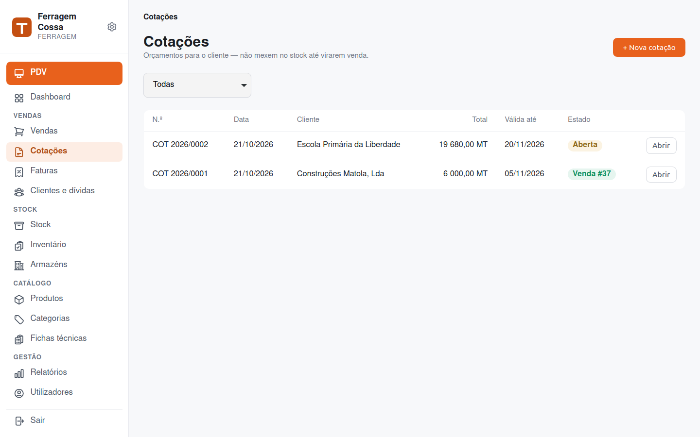
Lista de cotações: uma aberta e uma já convertida em venda.
Criar uma cotação
+ Nova cotação.
Escolha o cliente: um cliente registado, "Outro" (escreve o nome) ou "Consumidor final".
Indique a validade em dias (15 por omissão).
Pesquise e acrescente os produtos; ajuste quantidades e descontos. Pode juntar um desconto geral e observações (aparecem no documento).
Criar cotação. Recebe um número do tipo COT 2026/0002.
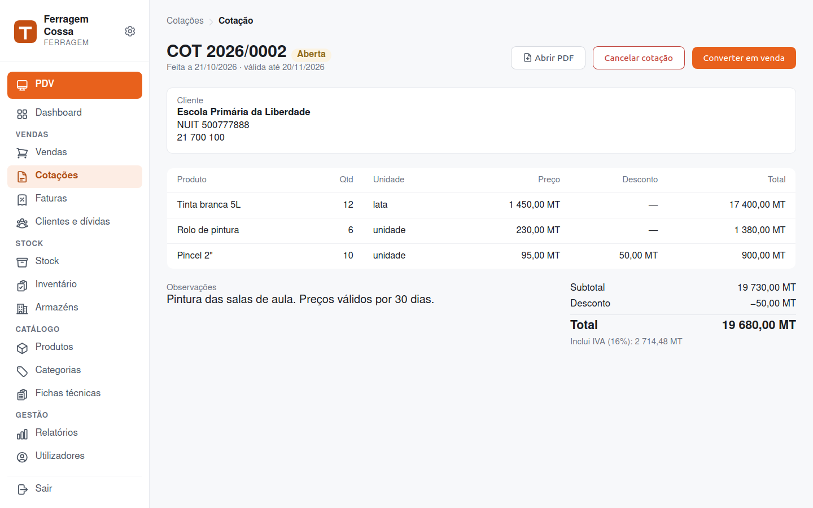
Cotação aberta para a Escola Primária.
Enviar ao cliente
Abrir PDF gera o documento em A4, pronto a imprimir ou a anexar a um email.
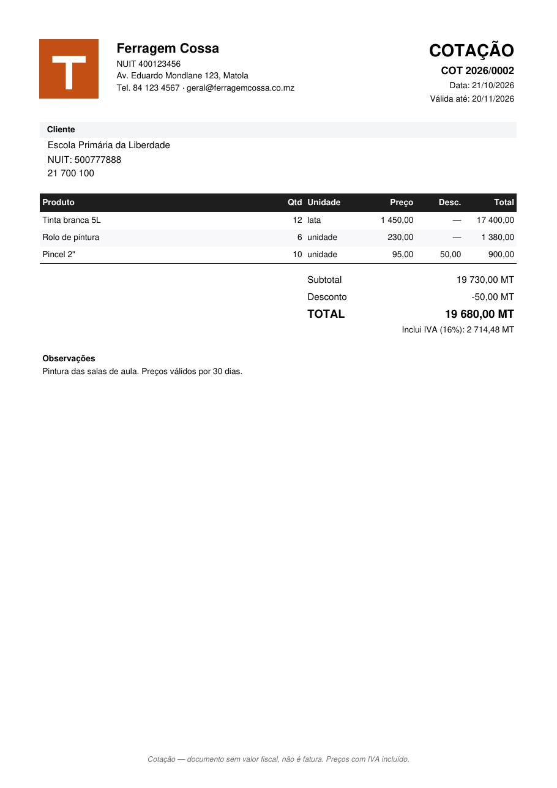
Cotação em PDF.
Converter em venda
Quando o cliente aceita, carregue em Converter em venda:
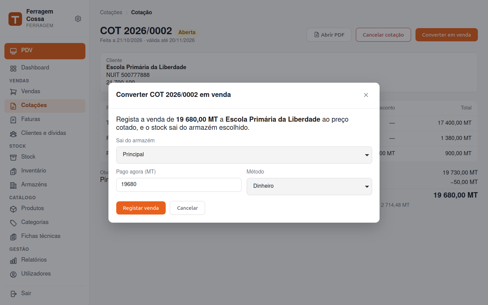
Converter a cotação em venda.
Escolha o armazém de onde sai a mercadoria e quanto o cliente paga agora.
Pago por inteiro: venda normal. Pago em parte: venda a crédito, e o resto fica em dívida (só para clientes registados).
Vale sempre o preço cotado, mesmo que o preço do produto tenha subido entretanto.
Uma cotação só se converte uma vez. Cancelar cotação fecha-a sem venda.
15. Faturas
Importante: a emissão de documentos fiscais só deve ser ligada depois de o programa estar aprovado pela Autoridade Tributária. Enquanto estiver desligada, o PDV emite um recibo interno, que não serve de fatura.
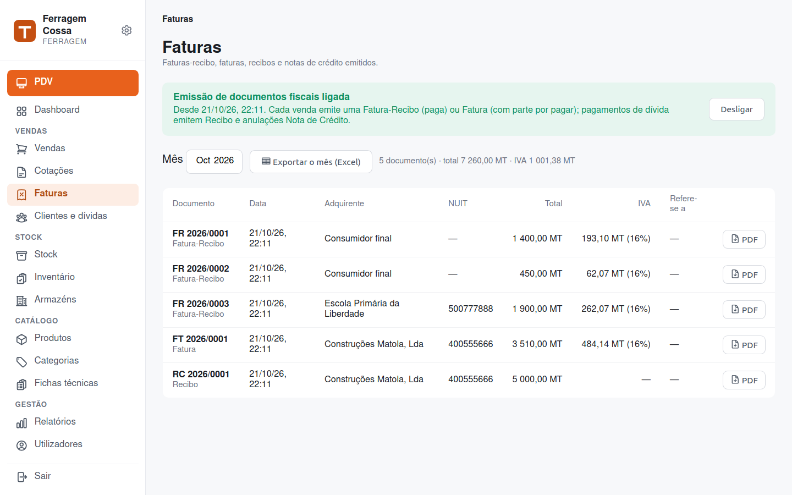
Ecrã Faturas com a emissão ligada.
Com a emissão ligada (Ligar emissão), cada operação gera o seu documento, com numeração própria por tipo e ano:
Documento
Quando é emitido
Fatura-Recibo (FR)
Venda paga por inteiro.
Fatura (FT)
Venda a crédito ou com parte por pagar.
Recibo (RC)
Pagamento de uma dívida; indica a fatura que paga.
Nota de Crédito (NC)
Anulação de uma venda; anula a fatura correspondente.
Os documentos mostram o NUIT da loja e do cliente, a base tributável e o IVA.
Um documento emitido não se altera nem se apaga. Para corrigir, anula-se a venda (Nota de Crédito) e faz-se uma nova.
Escolha o mês para ver os documentos e o total de IVA; PDF abre cada documento em A4.
Exportar o mês (Excel) gera o ficheiro mensal dos documentos emitidos.
Se aparecer "venda(s) sem documento", a emissão falhou nessa venda: carregue em Emitir.
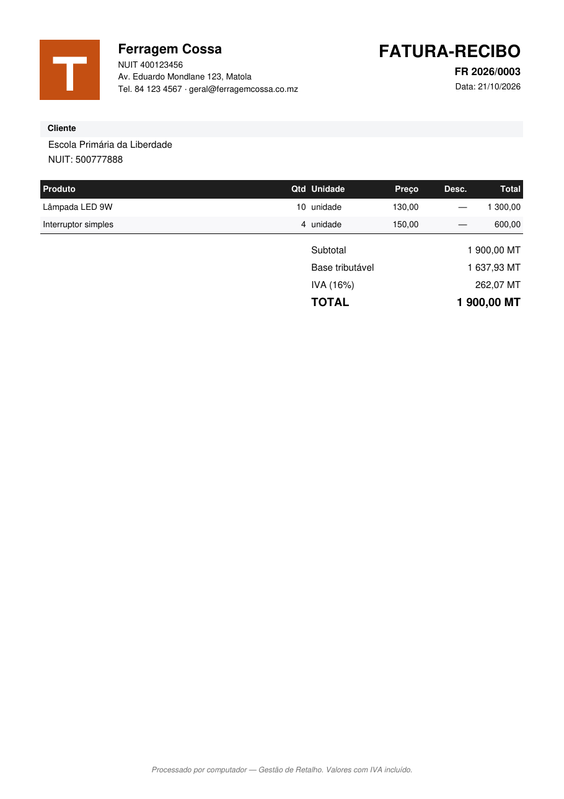
Fatura-Recibo em PDF.
16. Fecho de caixa
No fim do dia, em Vendas → Fecho de caixa (ou Relatórios → Fecho de caixa diário), confira o dinheiro de cada método de pagamento.
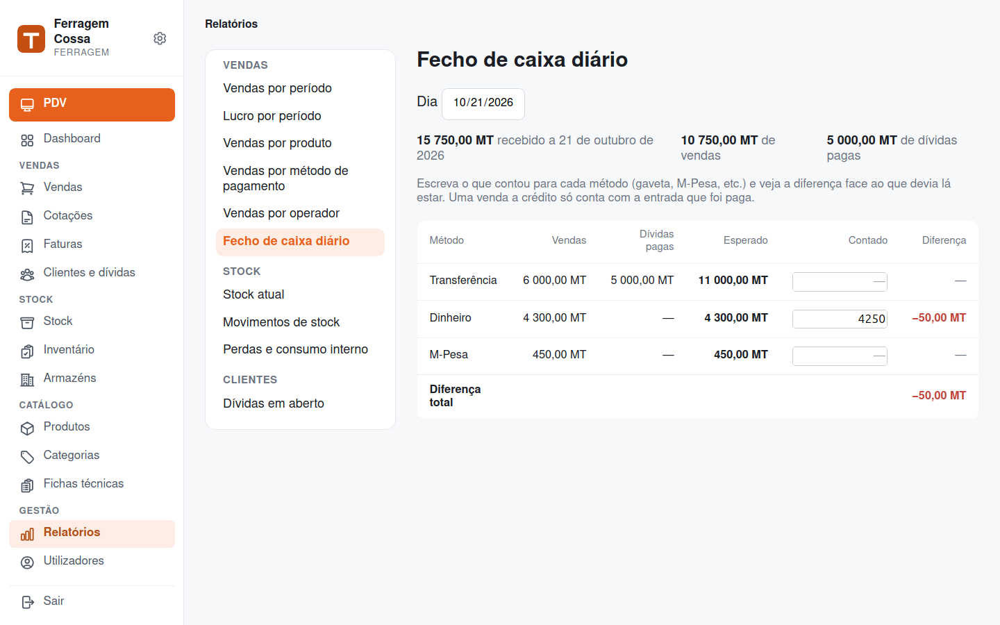
Fecho de caixa: faltam 50 MT em dinheiro.
Escolha o dia.
Para cada método vê o que entrou de vendas e de dívidas pagas, e o total esperado.
Conte a gaveta (e confira o M-Pesa, e-Mola, etc.) e escreva o valor em Contado. A Diferença aparece logo.
O troco não conta: numa venda de 1 370 MT paga com 2 000 MT, ficam registados 1 370 MT em dinheiro, que é o que fica na gaveta.
17. Relatórios
Escolha o relatório à esquerda, o período (ou Hoje, 7 dias, 30 dias) e, quando existir, o armazém. Todos se exportam para Excel ou PDF.
Os operadores são as pessoas que vendem no PDV. Cada um entra com um PIN, e as vendas ficam em seu nome.
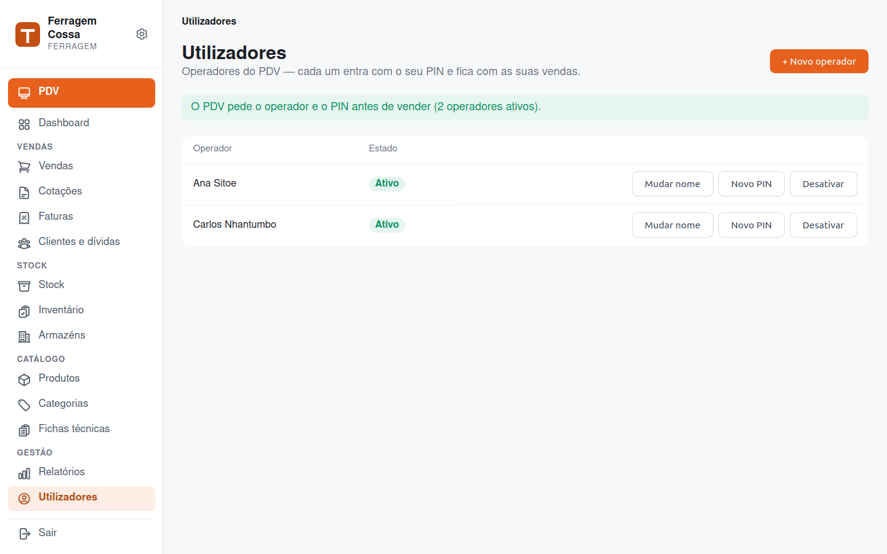
Operadores do PDV.
+ Novo operador — nome e PIN de 4 a 6 algarismos.
Mudar nome, Novo PIN (se o operador o esqueceu) e Desativar (quando deixa de trabalhar na loja; as vendas dele mantêm-se).
Sem nenhum operador ativo, o PDV abre diretamente para vender, e as vendas ficam em nome do administrador.
19. Ponto de Venda (PDV)
Abra-o na Administração com o botão PDV. Abre em ecrã inteiro.
Identificação do operador
Toque no seu nome e escreva o PIN no teclado do ecrã:
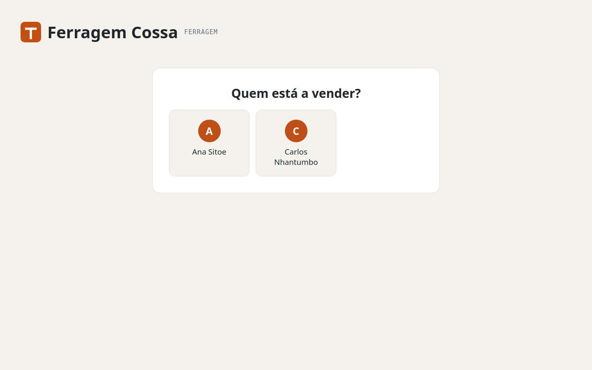
Escolher o operador.
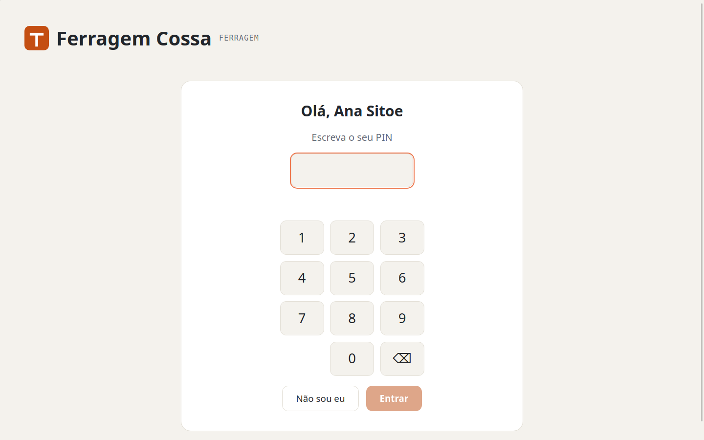
Escrever o PIN.
No fim do turno, ou para outra pessoa vender, carregue em Trocar operador (canto superior direito).
O ecrã de venda
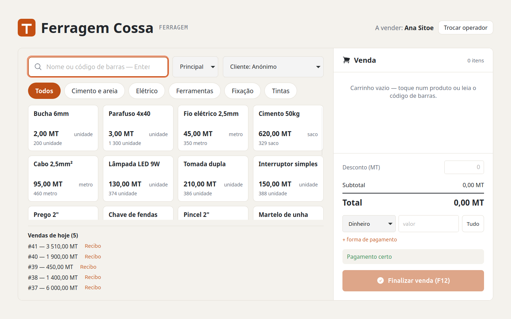
Ecrã de venda: produtos à esquerda, venda à direita.
Pesquisa (topo): escreva parte do nome, ou leia o código de barras com o leitor, e carregue em Enter para juntar à venda. F2 volta à pesquisa a qualquer momento.
Categorias: toque numa categoria para ver só esses produtos.
Armazém e Cliente: de onde sai o stock e a quem se vende (por omissão, cliente anónimo).
Cada cartão mostra o preço e o stock disponível; os produtos sem stock aparecem assinalados.
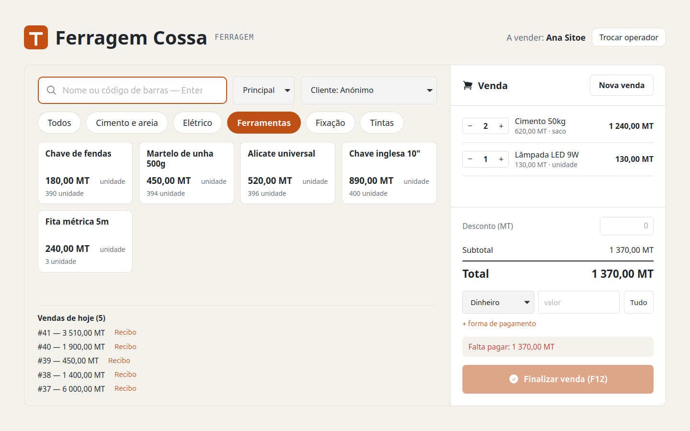
Categoria Ferramentas selecionada, com dois produtos na venda.
A venda
Toque num produto para o juntar; tocar outra vez soma mais um. Ajuste com − e +.
Desconto (MT) aplica um desconto ao total.
Nova venda limpa a venda atual (pede confirmação).
Pagamento e troco
Escolha o método (Dinheiro, M-Pesa, e-Mola, Cartão, Transferência) e escreva o valor recebido. Tudo preenche o valor exato.
Se o cliente entregar mais dinheiro, aparece o Troco em verde.
Para pagar com dois métodos, use + forma de pagamento.
Carregue em Finalizar venda ou F12.
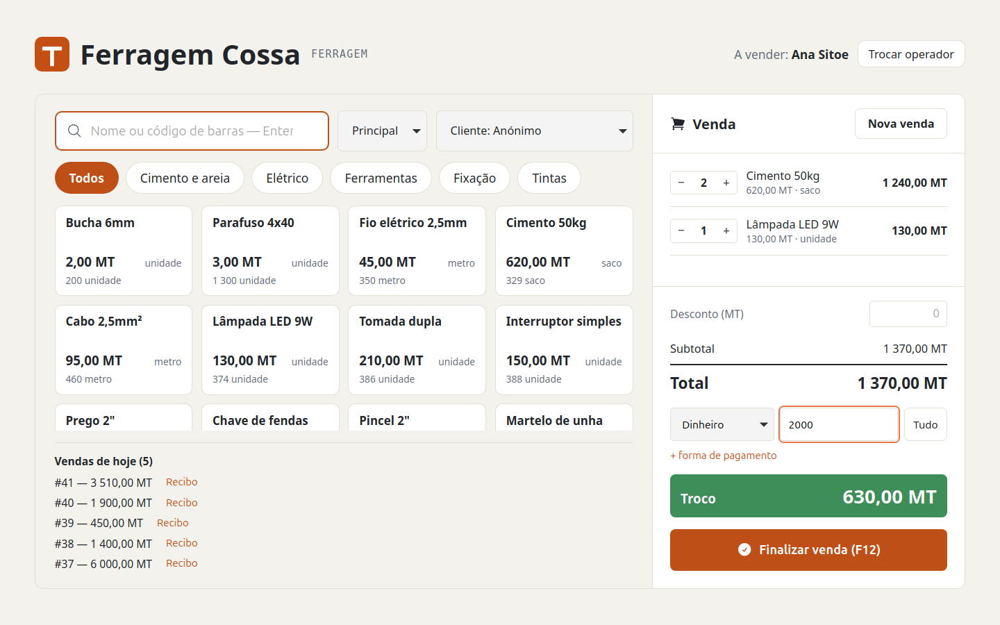
Venda de 1 370 MT paga com 2 000 MT: troco de 630 MT.
Só há troco de dinheiro. Se escrever a mais em M-Pesa ou cartão, o PDV pede para corrigir o valor.
Venda concluída
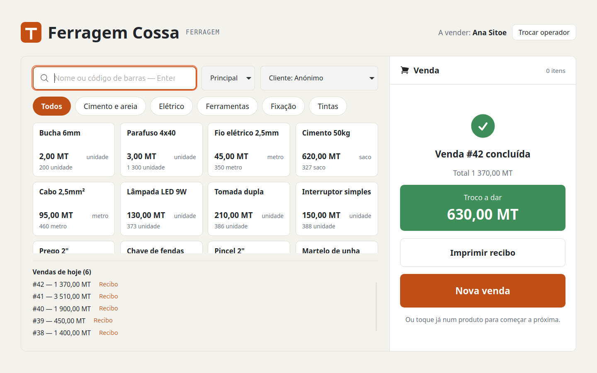
Venda concluída, com o troco a dar.
Aparece o número da venda, o troco a dar e dois botões: Imprimir recibo e Nova venda. Também pode tocar logo num produto para começar a venda seguinte. Em baixo, à esquerda, a lista Vendas de hoje permite reimprimir o recibo de qualquer venda do dia.
20. Impressão de recibos
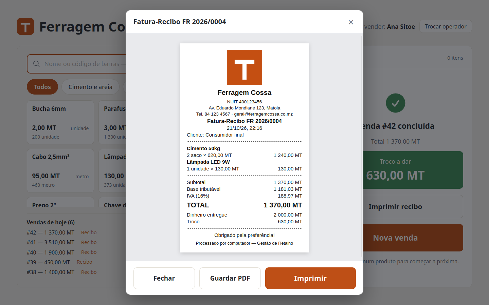
Recibo da venda, no formato do rolo da impressora.
O recibo abre numa janela com o aspeto do talão impresso, na largura configurada (80 mm, 58 mm ou A5). Mostra a loja, o número do documento, os produtos, os totais, o IVA, o dinheiro entregue e o troco.
Imprimir (ou Ctrl+P) — abre a impressão do Windows. Escolha a impressora de recibos; só o talão é impresso.
Guardar PDF — guarda o recibo em PDF.
Fechar (ou Esc).
Se a impressora de recibos for a predefinida do Windows e tiver o papel certo configurado, basta carregar em Imprimir na janela do Windows.
21. Atalhos e dicas
Tecla
Onde
O que faz
F2
PDV
Vai para a pesquisa de produtos.
Enter
PDV, pesquisas
Junta o produto encontrado (ou lido pelo leitor).
F12
PDV
Finaliza a venda.
Ctrl+P
Recibo
Imprime.
Esc
Janelas
Fecha a janela aberta.
Dicas
Registe os códigos de barras dos produtos: vender passa a ser só ler o código.
Defina o stock mínimo dos produtos importantes para receber alertas a tempo.
Faça o fecho de caixa todos os dias e um inventário pelo menos uma vez por mês.
Use cotações para clientes que pedem preço antes de comprar: convertem-se em venda com um toque.
Faça cópia de segurança da pasta de dados regularmente.
22. Problemas frequentes
Problema
O que fazer
Esqueci a palavra-passe do administrador.
Contacte o suporte. Não há recuperação automática, por segurança.
O operador esqueceu o PIN.
Na Administração, em Utilizadores, use Novo PIN.
Um produto não aparece no PDV.
Confirme que está ativo (Produtos), que a categoria está ativa e que tem stock no armazém escolhido no PDV.
O armazém não aparece no PDV.
Em Armazéns, edite-o e marque "Disponível para venda".
"Stock insuficiente" ao vender.
Registe a receção da mercadoria ou corrija com um inventário.
Alterei o nome ou o logótipo e o PDV não mudou.
Feche o PDV e volte a abri-lo.
O recibo sai demasiado pequeno ou cortado.
Confirme o papel nas Configurações da loja (80 ou 58 mm) e nas preferências da impressora no Windows.
Enganei-me numa venda.
No próprio dia, em Vendas → Detalhe → Anular venda, e faça-a de novo.
O fecho de caixa não bate certo.
Veja em Vendas as vendas do dia e confirme os métodos de pagamento; procure vendas anuladas ou pagamentos de dívidas.